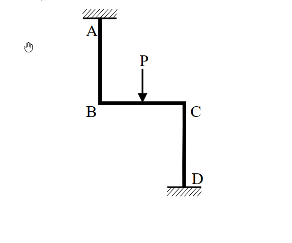
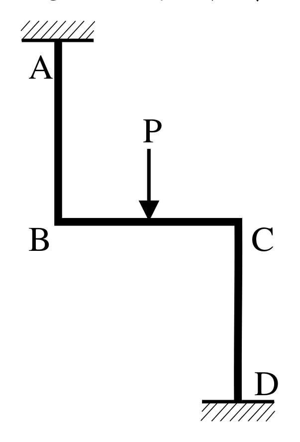
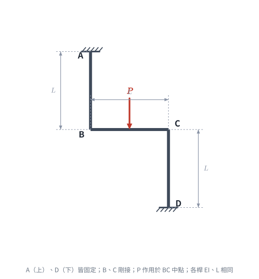
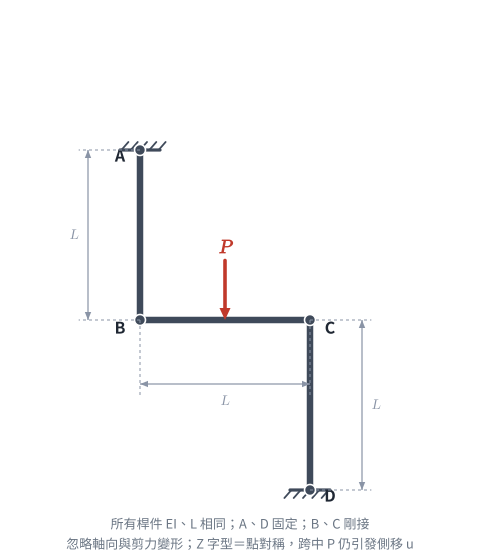
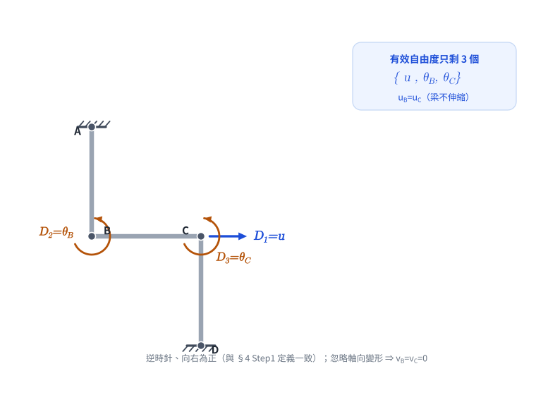
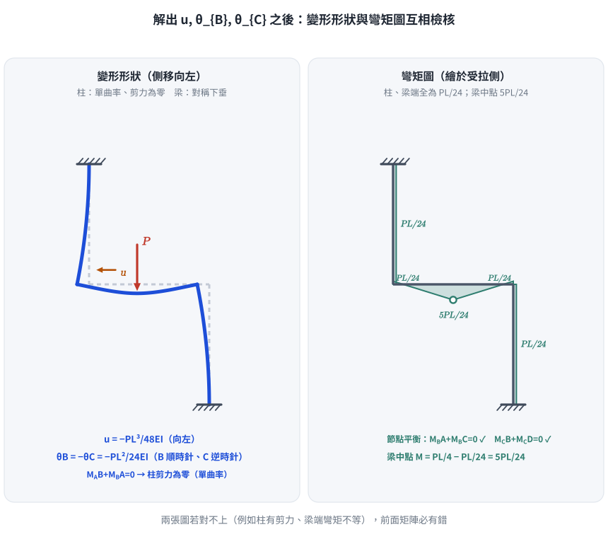

📄 題目正本（考卷原文、附圖與判讀清單；不含解法）
SA-2018-2 題目正本
本檔只記錄考卷上寫了什麼、圖上畫了什麼，不含任何解法。解析見同資料夾
SA-2018-2.md。
判讀清單經使用者確認前，狀態為「待確認」；確認後本檔原則上不再修改（改動須回考卷原圖並記 log）。
| 項目 | 內容 |
|---|---|
| 考卷 | raw/exams/SA-2018_結構學.pdf，第 1 頁下半，第二題 |
| 考年 | 2018（民國 107 年）專技高考結構工程技師「結構學」 |
| 配分 | 25 分 |
| 附圖 | SA-2018-2-fig-1.png、SA-2018-2-fig-2.png |
| 判讀狀態 | 已確認（2026-11-05 使用者確認。原轉錄：2026-11-05 轉錄；PyMuPDF 110 dpi 整頁＋250–800 dpi 局部放大、PDF 向量座標；盲讀於開啟解析前完成） |
1. 考卷原文（逐字）
二、撓曲構架如下圖，在水平桿件 BC 中央承受向下外力 P 作用。假設所有桿件 EI 值固定且長度均為 L，軸向變形及剪力變形均可忽略。請畫結構圖並定義自由度編號，然後建立勁度矩陣及節點外力向量，並以直接勁度法求解各自由度位移（以其他方法計算不予計分）。接著，請繪製彎矩圖，必須標示所有桿件節點處、局部最大或最小處之值。（25 分）
2. 考卷給的公式、附表與參數
- 考卷沒有給任何參考公式或附表。
- EI 定值、各桿長 L；忽略軸向與剪力變形（題文）。
- 附圖沒有尺寸線，長度以題文為準。
- 考卷沒有給數值。
- 卷首注意事項：可以使用電子計算器。不必抄題，作答時請將試題題號及答案依照順序寫在試卷上，於本試題上作答者，不予計分。本科目除專門名詞或數理公式外，應使用本國文字作答。
- 考試時間：2 小時。
3. 附圖

證據圖 SA-2018-2-fig-1.png

證據圖 SA-2018-2-fig-2.png（2026-11-05 自考卷重新擷取 500 dpi，無游標）
圖面文字照錄：A、P、B、C、D
4. 判讀清單
| # | 項目 | 判讀 | 圖上／題文依據 | 把握 |
|---|---|---|---|---|
| 1 | 幾何 | A 在 B 正上方 L；C 在 B 右方 L；D 在 C 正下方 L（Z 字形） | 題文「長度均為 L」；PDF 向量座標 AB = 52.9、BC = 52.1、CD = 52.1 pt | 確定 |
| 2 | 節點 B、C | 剛接（無鉸圈） | 附圖 | 確定 |
| 3 | 支承 A、D | 固定端 | 附圖剖線（A 在上、D 在下） | 確定 |
| 4 | 載重 | P 向下，BC 中點 | 題文；PDF 向量座標 P 箭頭 x = 313.6 pt、BC 中點 313.35 pt | 確定 |
| 5 | 剛度 | EI 定值；忽略軸向、剪力變形 | 題文 | 確定 |
| 6 | 所求 | 結構圖與自由度編號、勁度矩陣、節點外力向量、各自由度位移、彎矩圖（節點、局部極值）；限直接勁度法 | 題文 | 確定 |
| 7 | 證據圖 | 舊截圖 fig-1：滑鼠游標（手形）在 A 左下方空白處，未壓到圖；新增 fig-2（2026-11-05 自考卷重新擷取 500 dpi） | — | 確定 |
轉錄：2026-11-05（SA-U2-4 題目正本推廣・批 1）
確認：2026-11-05 使用者確認
考題編號：SA-2018-2
主分類： 靜不定結構之矩陣分析法 (SA-U2-4)
副分類：
分析法： 矩陣分析法
標籤： 直接勁度法 勁度矩陣 節點外力向量 彎矩圖
1. 題目（考卷原文見題目正本）
考卷原文、公式／附表、附圖與判讀清單（已確認）見
SA-2018-2-problem.md。本節只列解題時最容易讀錯的地方與本解使用的記號；題意以題目正本為準。

重繪自考卷附圖，依判讀清單 #1–#7 重繪。攔：Z 字形讀成鏡射對稱、P 作用點讀錯。
常見誤讀
| 項目 | 正確判讀 | 常見誤讀 |
|---|---|---|
| 固定端位置 | A 在上、D 在下（點對稱 Z 字形） | 兩柱底都固定（門型） |
| P 位置 | BC 中點 | B 或 C |
本解記號： 記號與正負號約定沿用 §4。
判讀圖解（解析自繪）

圖 1 題目重繪（向量版）。這是「點對稱」而非「鏡射對稱」構架——AB 頂固定、CD 底固定，左右兩柱的固定端位置正好相反。這張圖攔的是把 Z 字型誤看成鏡射對稱，進而誤判側移 $u=0$。
2. 考題核心精神與出題者意圖 (Core Concepts & Examiner's Intent)
本題測驗考生對於直接勁度法 (Direct Stiffness Method) 的標準操作流程是否熟練。核心要求包含：
- 正確選定並編號系統的獨立自由度（需判斷忽略軸向變形下的側移自由度）。
- 組裝整體勁度矩陣 $[K]$（特別考驗左右兩根垂直柱因節點位置不同，對側移與旋轉耦合項 $K_{12}, K_{13}$ 的正負號判斷）。
- 計算等效節點外力向量 $\{P\}$。
- 解方程式求得位移後，回代求端彎矩並繪製精確的 BMD。
3. 解題戰略地圖與陷阱分析 (Strategic Roadmap & Trap Analysis)
-
戰略一：確認自由度
忽略軸向變形，A、D 固定，故 $v_B = v_A = 0$，$v_C = v_D = 0$。水平樑 BC 不可伸長，故 $u_B = u_C = u$。系統共有 3 個獨立自由度：側移 $u$、節點 B 旋轉 $\theta_B$、節點 C 旋轉 $\theta_C$。 -
戰略二：建立 $[K]$ 與 $\{P\}$
分別計算 AB 柱、BC 樑、CD 柱對各自由度的勁度貢獻，並利用 BC 跨中載重求固端彎矩，反向施加於節點得 $\{P\}$。 -
陷阱：
- 座標系與符號約定：AB 柱與 CD 柱的頂底關係不同。AB 柱是頂部固定、底部活動；CD 柱是頂部活動、底部固定。這會導致它們在側移 $u$ 時，引發的端點彎矩方向相反，進而使 $K_{12}$ 與 $K_{13}$ 的符號一正一負。若直接死背公式極易出錯。
- 對稱性誤判：雖然載重與幾何形狀看起來有些對稱，但這是「點對稱 (反對稱)」構架，向下力會打破點對稱性，最終產生側移 $u \neq 0$。
3.5 變數層次分析 (Variable Hierarchy Analysis)
最終目標
建立 $[K]\{D\} = \{P\}$ 並求解位移 $D_1, D_2, D_3$，進而繪製全結構 BMD。
本題關鍵公式（依計算順序）
$$ [K] = \sum [K]_{member} $$
（組裝整體勁度矩陣）
$$ \boxed{\{P\}} = -\{FEM\} $$
（等效節點外力向量）
$$ \{D\} = \boxed{[K]}^{-1} \boxed{\{P\}} $$
（求解節點位移向量）
$$ M_{end} = M_{FEM} + \sum K_{ij} D_j $$
（回代求桿端彎矩）
L1：題目直接給定
- 桿件長度 ∣ $L$ ∣ 所有桿件等長
- 彎曲剛度 ∣ $EI$ ∣ 固定常數
- 載重 ∣ $P$ ∣ BC 中點向下
L2：需知識點推導
局部勁度與固端力
- 側移勁度 ∣ $12EI/L^3$, $6EI/L^2$ ∣ 柱件側移產生之剪力與彎矩
- 旋轉勁度 ∣ $4EI/L$, $2EI/L$ ∣ 節點旋轉產生之彎矩
- 固端彎矩 ∣ $PL/8$ ∣ 跨中集中力之 FEM
L3：深層知識（不懂就卡住）
- 勁度符號判斷 ∣ AB 柱與 CD 柱對側移的耦合勁度 $K_{12}$ 與 $K_{13}$ 符號相反。 ∣
4. 步驟化詳細計算過程 (Step-by-Step Detailed Calculation)
Step 1: 定義結構圖與自由度編號
為符合直接勁度法規範，定義以下 3 個系統自由度（正向約定：向右、逆時針為正）：
- $D_1 = u$：節點 B、C 的水平向右側移
- $D_2 = \theta_B$：節點 B 的逆時針旋轉角
- $D_3 = \theta_C$：節點 C 的逆時針旋轉角

圖 2 自由度辨識。忽略軸向變形使 $v_B=v_C=0$、$u_B=u_C=u$，把原本 6 個節點自由度收斂成 3 個。這張圖攔的是自由度數目算錯，或方向與 Step1 的「向右、逆時針為正」約定不一致，導致後面 $[K]$ 矩陣行列錯位。
Step 2: 建立勁度矩陣 $[K]$
依序考慮給定單一自由度單位位移時，各節點所需之對應外力：
- 令 $D_1 = 1$ ($u=1$, $\theta_B=0, \theta_C=0$)：
- AB 柱（頂部固定，底部右移）：需水平力 $12EI/L^3$、節點 B 需彎矩 $-6EI/L^2$ (順時針)。
- CD 柱（底部固定，頂部右移）：需水平力 $12EI/L^3$、節點 C 需彎矩 $+6EI/L^2$ (逆時針)。
- $K_{11} = \frac{12EI}{L^3} + \frac{12EI}{L^3} = \frac{24EI}{L^3}$
- $K_{21} = -\frac{6EI}{L^2}$
-
$K_{31} = \frac{6EI}{L^2}$
-
令 $D_2 = 1$ ($u=0$, $\theta_B=1, \theta_C=0$)：
- AB 柱：產生 B 端彎矩 $4EI/L$，並需水平力 $-6EI/L^2$ 以維持 $u=0$。
- BC 樑：產生 B 端彎矩 $4EI/L$、C 端彎矩 $2EI/L$。
- $K_{12} = -\frac{6EI}{L^2}$
- $K_{22} = \frac{4EI}{L} + \frac{4EI}{L} = \frac{8EI}{L}$
-
$K_{32} = \frac{2EI}{L}$
-
令 $D_3 = 1$ ($u=0$, $\theta_B=0, \theta_C=1$)：
- CD 柱：產生 C 端彎矩 $4EI/L$，並需水平力 $+6EI/L^2$ 以維持 $u=0$。
- BC 樑：產生 C 端彎矩 $4EI/L$、B 端彎矩 $2EI/L$。
- $K_{13} = \frac{6EI}{L^2}$
- $K_{23} = \frac{2EI}{L}$
- $K_{33} = \frac{4EI}{L} + \frac{4EI}{L} = \frac{8EI}{L}$
組裝得整體勁度矩陣：
$$ [K] = \begin{bmatrix}
\frac{24EI}{L^3} & -\frac{6EI}{L^2} & \frac{6EI}{L^2} \\
-\frac{6EI}{L^2} & \frac{8EI}{L} & \frac{2EI}{L} \\
\frac{6EI}{L^2} & \frac{2EI}{L} & \frac{8EI}{L}
\end{bmatrix} $$
Step 3: 建立節點外力向量 $\{P\}$
BC 樑中點受向下力 P，其固端彎矩為：
- $FEM_{BC} = +\frac{PL}{8}$ (逆時針)
- $FEM_{CB} = -\frac{PL}{8}$ (順時針)
⚠️ 判斷方向：若 B 端未被固定，梁受向下載重下垂，B 端會順時針轉；固定端要擋住它，所以施加在梁 B 端的固端彎矩是逆時針。（2026-10-06 修正：原稿此處正負號寫反。）
將固端力反向施加於節點形成等效節點載重：
- $P_1 = 0$ (無直接水平外力)
- $P_2 = -FEM_{BC} = -\frac{PL}{8}$
- $P_3 = -FEM_{CB} = +\frac{PL}{8}$
$$ \{P\} = \begin{bmatrix} 0 \\ -\frac{PL}{8} \\ \frac{PL}{8} \end{bmatrix} $$
Step 4: 求解各自由度位移
解矩陣方程式 $[K]\{D\} = \{P\}$：
1) $\frac{24EI}{L^3} D_1 - \frac{6EI}{L^2} D_2 + \frac{6EI}{L^2} D_3 = 0 \implies D_1 = \frac{L}{4}(D_2 - D_3)$
2) $-\frac{6EI}{L^2} D_1 + \frac{8EI}{L} D_2 + \frac{2EI}{L} D_3 = -\frac{PL}{8}$
3) $\frac{6EI}{L^2} D_1 + \frac{2EI}{L} D_2 + \frac{8EI}{L} D_3 = \frac{PL}{8}$
將 $D_1$ 代入 2) 與 3) 並兩式相加，可得 $10\frac{EI}{L}(D_2 + D_3) = 0 \implies D_3 = -D_2$。
代回 1) 得 $D_1 = \frac{L}{2}D_2$；再代入 2)：$\left(-3+8-2\right)\frac{EI}{L}D_2 = 3\frac{EI}{L}D_2 = -\frac{PL}{8}$。解得：
$$ \boxed{ D_1 = u = -\frac{PL^3}{48EI} } \quad\text{（向左）} $$
$$ \boxed{ D_2 = \theta_B = -\frac{PL^2}{24EI} } \quad\text{（順時針）} $$
$$ \boxed{ D_3 = \theta_C = +\frac{PL^2}{24EI} } \quad\text{（逆時針）} $$
合理性：梁受向下載重而下垂，B 端順時針、C 端逆時針轉，符合直覺；AB 柱底端 B 順時針轉，柱身向左彎，故側移向左。（已以有限元素程式驗算，數值與符號一致。）
Step 5: 繪製彎矩圖 (BMD)
計算各桿端彎矩 (以逆時針為正)：
- $M_{AB} = \frac{2EI}{L} \theta_B - \frac{6EI}{L^2} u = -\frac{PL}{12} + \frac{PL}{8} = +\frac{PL}{24}$ (逆時針)
- $M_{BA} = \frac{4EI}{L} \theta_B - \frac{6EI}{L^2} u = -\frac{PL}{6} + \frac{PL}{8} = -\frac{PL}{24}$ (順時針) → AB 柱全段右側（內側）受拉
- $M_{BC} = \frac{2EI}{L}(2\theta_B + \theta_C) + \frac{PL}{8} = -\frac{PL}{12} + \frac{PL}{8} = +\frac{PL}{24}$ (逆時針，上方受拉)
- $M_{CB} = \frac{2EI}{L}(2\theta_C + \theta_B) - \frac{PL}{8} = \frac{PL}{12} - \frac{PL}{8} = -\frac{PL}{24}$ (順時針，上方受拉)
- $M_{CD} = \frac{4EI}{L}\theta_C + \frac{6EI}{L^2} u = \frac{PL}{6} - \frac{PL}{8} = +\frac{PL}{24}$ (逆時針)
- $M_{DC} = \frac{2EI}{L}\theta_C + \frac{6EI}{L^2} u = \frac{PL}{12} - \frac{PL}{8} = -\frac{PL}{24}$ (順時針) → CD 柱全段右側（外側）受拉
檢核：節點 B $M_{BA}+M_{BC}=0$ ✓、節點 C $M_{CB}+M_{CD}=0$ ✓；兩柱 $M_{AB}+M_{BA}=0$、$M_{CD}+M_{DC}=0$ ⇒ 柱剪力為零 ✓。
BC樑跨中最大彎矩：
$M_{mid} = \frac{PL}{4} - \frac{PL}{24} = \frac{5PL}{24}$ (下方受拉)
📊 彎矩圖 (BMD) 標示說明：
- AB 柱：全段均勻彎矩 $PL/24$，畫於柱右側 (內側，與梁 B 端上緣受拉連續)。
- CD 柱：全段均勻彎矩 $PL/24$，畫於柱右側 (外側，與梁 C 端上緣受拉連續)。
- BC 樑：B、C 兩端彎矩為 $PL/24$ 畫於樑上方；跨中最大正彎矩為 $5PL/24$ 畫於樑下方，呈兩段直線折線。

圖 3 變形形狀與彎矩圖的互相檢核。左圖顯示側移向左、兩柱皆為單曲率（純彎曲、剪力為零）、梁對稱下垂（B 順時針、C 逆時針）；右圖標出梁的彎矩在端點（上方受拉）與跨中（下方受拉）異號、圖形需穿越梁軸線。這張圖攔三種最常見的錯誤：固端彎矩正負號寫反（側移方向與柱受拉側整組顛倒）、柱端彎矩正負號寫反（導致柱出現不存在的剪力），以及把梁的彎矩圖畫成不變號的單邊三角形（跨中 $5PL/24$ 算成與端點同側）。
5. 關鍵爭議點與進階探討 (Critical Issues & Advanced Discussion)
- 剪力消失現象：由算出的柱端彎矩可知，$M_{AB} + M_{BA} = 0$，這意味著 AB 柱的剪力為零；同理 CD 柱的剪力亦為零。這是一個非常優雅的力學結果：外加垂直載重在此特定「點對稱幾何」構架中，並未在柱中引發任何剪力，兩根柱子處於「純彎曲」狀態，進而產生側移 $u$。
- 對稱性迷思：考生常會誤以為垂直載重置中，結構就不會發生側移。然而本題構架為 Z 字型（點對稱而非鏡像對稱），其勁度矩陣存在不平衡的耦合項，因此垂直力會誘發側向位移，不可將側移自由度 $u$ 假設為 0。
圖解補繪：2026-08-27（向量圖，腳本 gen_SA-2018-2.py，可重跑）
符號修正：2026-10-06——原稿 FEM_BC 正負號寫反，連帶 D₁～D₃ 與各端彎矩整組變號、柱受拉側標錯；已改正並重繪圖 3（量值不變：u＝PL³/48EI、θ＝PL²/24EI、端彎矩 PL/24、跨中 5PL/24）。
修正日期：2026-11-05（§1 改為指向題目正本並放重繪附圖（figs/SA-2018-2-fig-1-problem.svg）、加常見誤讀；原 §1 解析自繪圖移至「判讀圖解（解析自繪）」；圖由 gen_SA-2018-2_problem.py 產生，可重跑）